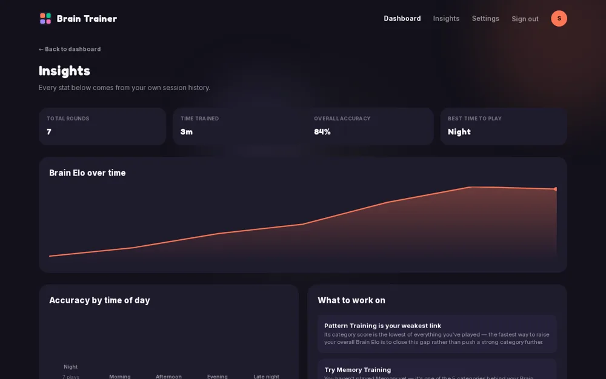
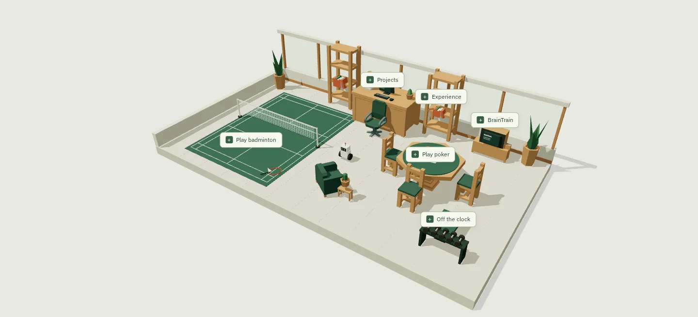

BrainTrain
A brain-training product connecting adaptive games, persistent progression, Elo rankings, and performance insights.

Next.js · TypeScript · Supabase · Vitest
Inside the project ↗A few things I've built. A few things I play.

Software developer, UNSW Computer Science graduate, and security enthusiast. Here's what I've been working on.
Explore my projects ↓Products and security systems, built to run and made to be understood.
A brain-training product connecting adaptive games, persistent progression, Elo rankings, and performance insights.

Next.js · TypeScript · Supabase · Vitest
Inside the project ↗Stateful threat detection, enrichment, and a hardened ingestion API.
Python · FastAPI · Elasticsearch · Redis
Read the case study ↗Three monitored endpoints, real file-integrity alerts, and VirusTotal-triggered quarantine.
Wazuh · VirusTotal · Windows · Linux
Read the case study ↗Three security scanners connected to one repeatable release gate.
GitHub Actions · Docker · OWASP ZAP
Read the case study ↗Software, security, and the work of making things run.
Bachelor of Computer Science, Security Engineering major, 2021-2025.
CompTIA Security+ (2025) · ISC2 Certified in Cybersecurity (2023)
I build software, get curious about how it breaks, and make time for a game.
I'm a Software Developer at Cybercore Solutions and a UNSW Computer Science graduate. I build products end to end, then go deep on how they fail and how to detect it.
My security work spans detection engineering, identity and Microsoft security, and DevSecOps automation. Everything shown here is my own build, lab, or authorised training.
Python, TypeScript, Next.js, FastAPI, PostgreSQL, and Supabase for building products. Wazuh, Elasticsearch, and Redis for detection. Entra ID, Intune, Docker, GitHub Actions, and OWASP ZAP for securing platforms and delivery.
CTF competitions keep my offensive tooling and defensive mental models current. At the UNSW Computer Science Society, I led a small hackathon team from idea to working prototype under a tight deadline.
Badminton, poker, games, and fitness. That's why the clubhouse has a court, a card table, and a training corner. Have a look around, or stay for a quick game.
Incident write-ups and things I'm learning.
An AI agent found the wrong shortcut. A closer look at access control, authorisation, and reversible system design.
Read the write-up ↗How a logging call became a global incident.
Read the write-up ↗A SQL injection and the risk of concentrated data.
Read the write-up ↗For a role, a project, or a conversation.
vukhanhluu@gmail.com ↗Two games from the clubhouse. Both are playable right here.
01Move, time your swing, and take on the clubhouse bot. First to seven.
A quick game of five-card draw. Keep, replace, and reveal.
A playable badminton match against the clubhouse bot.
Five-card draw against the house.
A quiet soundtrack and small sounds for the room.
Kilua Boy · a quiet ambient loop
Original track ↗Sound starts when you enable it. Your volume settings are remembered.
Explore at your own pace, or open Projects and get straight to the work.
A personal place, with a little help from generous asset creators.